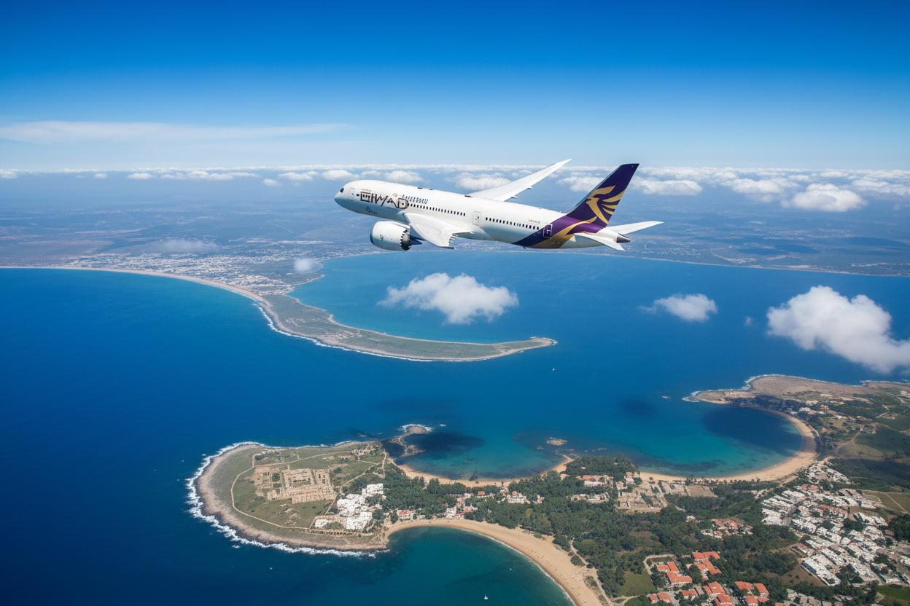

The best domestic and international transport companies in Libya.
Libya's national carrier, operating domestic flights to most Libyan cities and international routes to Europe and the Middle East.
+218 21 360 1000
A state-owned airline operating domestic and international flights, known for reliable service and regular schedules.
+218 21 444 0000
A private airline focused on domestic flights between Libya's main cities.
+218 21 555 0000
Air-conditioned bus services between Libya's main cities. Reliable service with regular departures.
+218 21 333 0000
Covers most Libyan coastal cities with modern, air-conditioned buses and excellent service.
+218 21 222 0000
Intra- and inter-city taxi service, with a booking app available for fast service.
+218 91 123 4567
Specialises in transport to the southern and desert cities, with 4x4 vehicles equipped for the Sahara.
+218 71 444 0000
A rail line planned to connect Tripoli and Benghazi. Currently under construction.
+218 21 777 0000
Ferry services between Libyan ports and neighbouring countries, carrying passengers and vehicles.
+218 21 888 0000